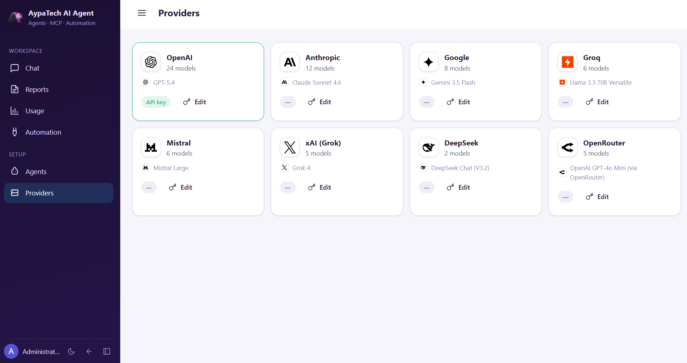
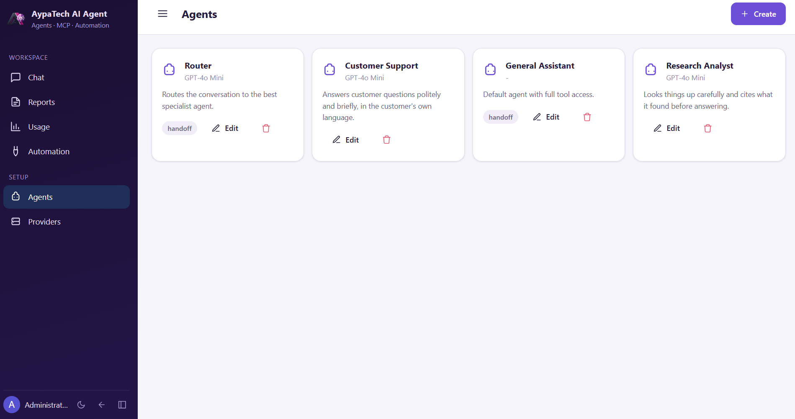
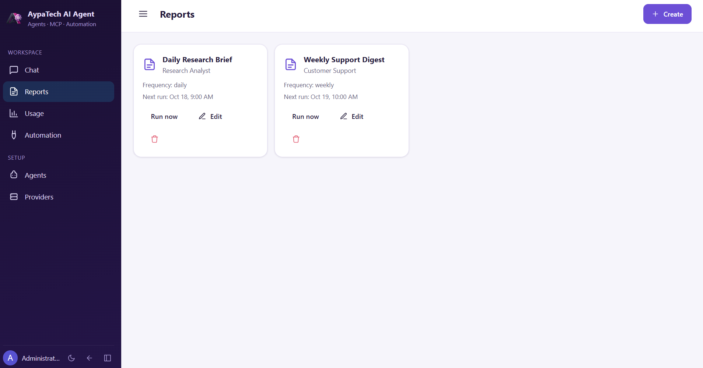
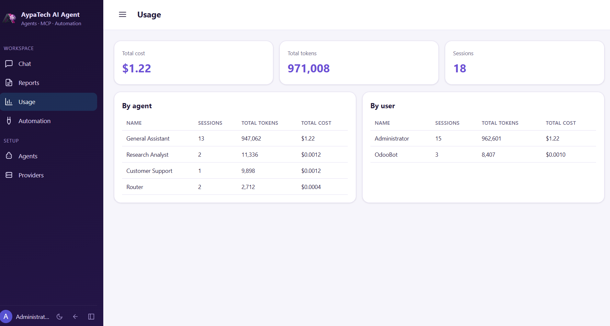
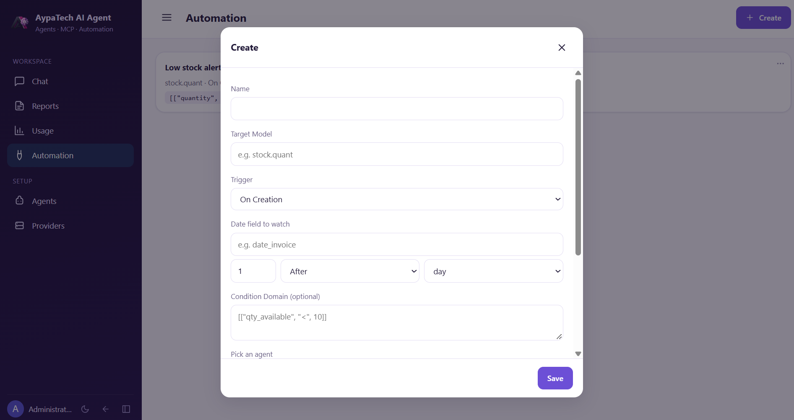

Want to see it on your own data first?
Questions about setup, providers or a specific use case - reach us directly.
Nine providers, one agent


Bring your own provider, or several
OpenAI, Anthropic, Google, Groq, Mistral, xAI, DeepSeek, OpenRouter and a local Ollama server - switch per agent, per space or per conversation, with a curated model catalog kept current for each one.
- Streaming replies with tool calls, reasoning effort and vision where the model supports it
- Cost and token usage tracked on every turn, per agent and per user
- An MCP client lets an agent reach tools on other MCP servers, alongside its own
- Your own MCP server, so Claude Desktop, Claude Code, Cursor or Codex CLI can reach your Odoo too

Agents that work inside Odoo, not beside it
Spaces organise chats by default agent and standing instructions. A session can be forked, rewound, or regenerated, and one agent can hand off to a specialist mid-conversation, in the same session or a fresh one.
- Approval cards for risky writes - approve once, allow for the session, or reject
- @-mention an agent anywhere in Discuss or a record's chatter
- Server actions and automation rules can run an agent, once or per record
- Sessions can pause themselves and wake up later, once or on a recurring cadence

Reports an agent writes, and delivers itself
Point a schedule at an agent and a prompt. It runs on your cadence, renders the answer as a letter-headed PDF with HTML fallback, and sends it by e-mail in each recipient's language, or straight to a Telegram chat.
- Full history of every report sent, resendable without regenerating it
- Run on demand or on a daily, weekly or monthly schedule, any time zone
- A cost and usage dashboard breaks spend down by agent and by user over time


New report in a few fields

Cost and usage, by agent and by user
Automation rules an agent carries out
Watch a model for a creation, update or a date field coming due, add an optional domain, and hand it to an agent - in one record at a time or the whole batch at once. No server action to write by hand.
- Triggers: on creation, on update, or a configurable offset from a date field
- An optional condition domain narrows which records actually fire the agent
- Runs per record or on the whole matched set, your choice per rule

Also included
Skills
Reusable instructions an agent or a user can switch into, shared privately, with named users, or everyone.
Voice in, voice out
Speech-to-text and text-to-speech through the providers that offer it, such as OpenAI and Google.
Audited MCP server
Scoped, rate-limited API keys and a full request log on an independent cursor.
Eleven languages
English, German, Italian, French, Portuguese, Spanish, Arabic, Persian, Turkish, Chinese and Japanese.
Up and running
Install it, add one provider's API key, and start chatting - no connector to configure.
1. Install
Apps - Update Apps List - install AI Agent.
2. Add a key
Settings - AI Agent - paste one provider's API key and pick a model.
3. Open Chat
A new app appears in the main menu; start talking to the default agent right away.
4. Shape it
Add agents, skills, a report schedule or an automation rule as you need them.
What you need
Just base Odoo and Discuss - no other app is required, and no WooCommerce connection is involved.
What is optional
A Telegram bot token for report delivery by Telegram, and wkhtmltopdf on the server for PDF reports.
Prefer we set it up for you? Write to us or message us on WhatsApp.
Questions
Do I need to pick one provider?
No. Configure as many as you like and assign a different one to each agent - a customer-facing agent on a fast, cheap model, a research agent on a stronger one, a private agent on a local Ollama server with no data ever leaving your network.
Does this connect to WooCommerce?
No. This module works on Odoo data alone. If you also run a WooCommerce store, our other module, WooFusion, adds a full WooCommerce connection on top of the same kind of AI agent, BI and reports, in one app.
Can a risky action run without anyone noticing?
No. Writes that an agent's approval mode flags show a diff card first - approve once, allow it for the rest of the session, or reject it. A read-only agent never needs approval at all.
Which Odoo versions are supported?
Odoo 20.0 Community and Enterprise, today. Earlier versions are not covered by this build.
Can I try it before committing to a provider?
Yes - the module installs free, and most providers offer a small free or trial credit, enough to see it work on your own data before you decide which one to keep using.
Releases
20.0.1.0.0
CurrentFirst release: chat agents, MCP server and client, skills, chatter, automation, schedules, scheduled reports, cost dashboard and voice.
Questions, a demo, or custom work?
AI Agent is developed and supported directly by the developer.